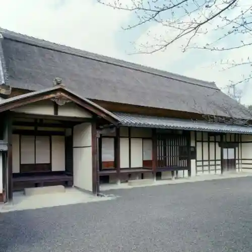
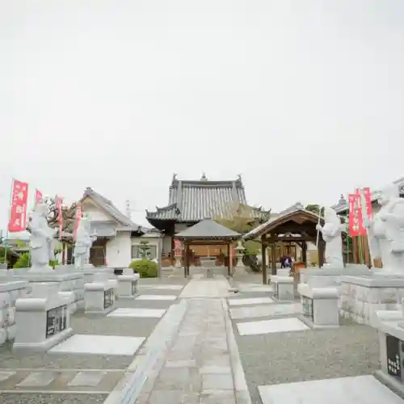
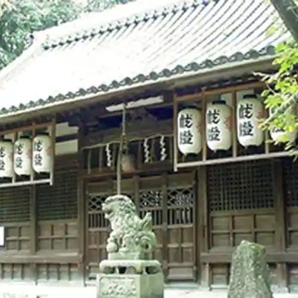

Habiki no Bijita Center
Habikino, Osaka · 072-959-2241 · Official / source link
Kichi Village Tei (Kichi Village Ie House)
Habikino, Osaka · 072-954-8022 · Official / source link

Tsuboi Hachiman Shrine
Habikino, Osaka · 072-956-2824 · Official / source link
Daikoku Tera
Habikino, Osaka · 072-956-0953 · Official / source link

Mori Hon Shrine
Habikino, Osaka · 072-921-2711 · Official / source link

Kawauchi Konda Haniwa Village Okura Ya
Habikino, Osaka · 072-958-3344 · Official / source link
Kawauchi Wain Kan
Habikino, Osaka · 072-956-0181 · Official / source link
Sui Tori Sono Iseki Park
Habikino, Osaka · 072-958-1111 · Official / source link
Sairin Tera
Habikino, Osaka · 072-956-0603 · Official / source link
Yoda Hachiman Shrine
Habikino, Osaka · 072-956-0635 · Official / source link
Nonaka Tera
Habikino, Osaka · 072-953-2248 · Official / source link